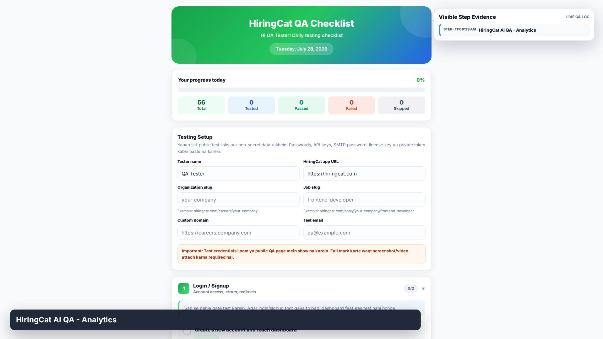
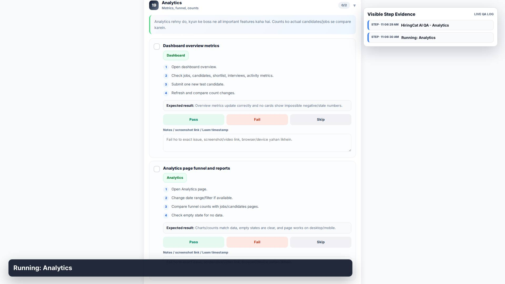
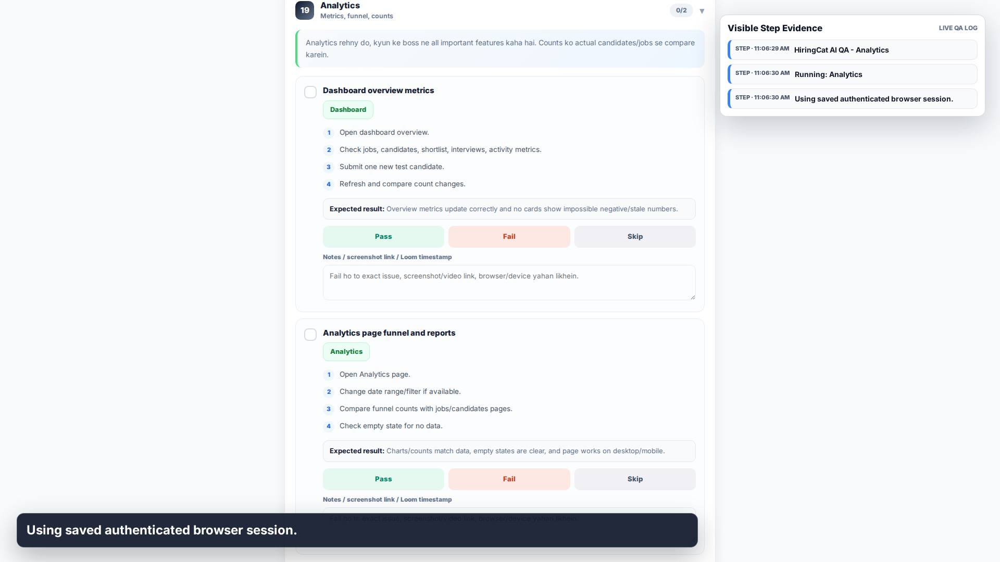
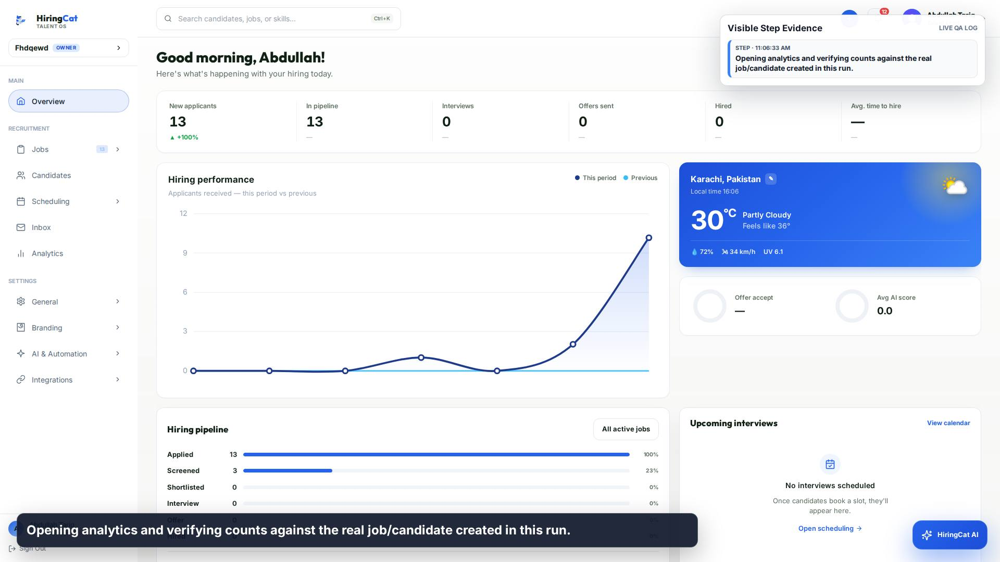
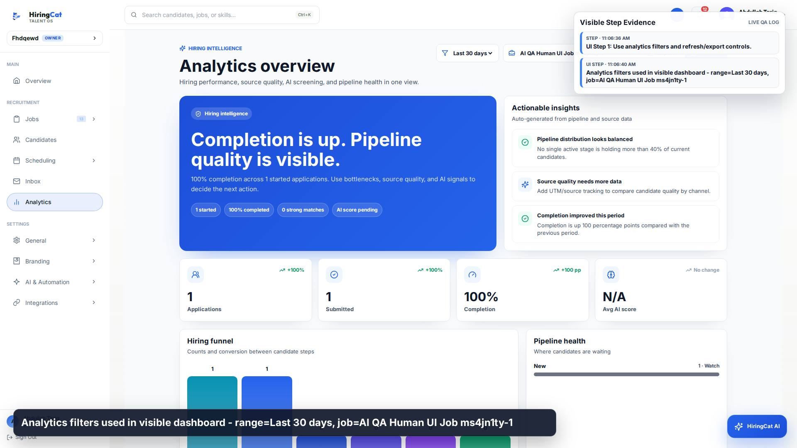
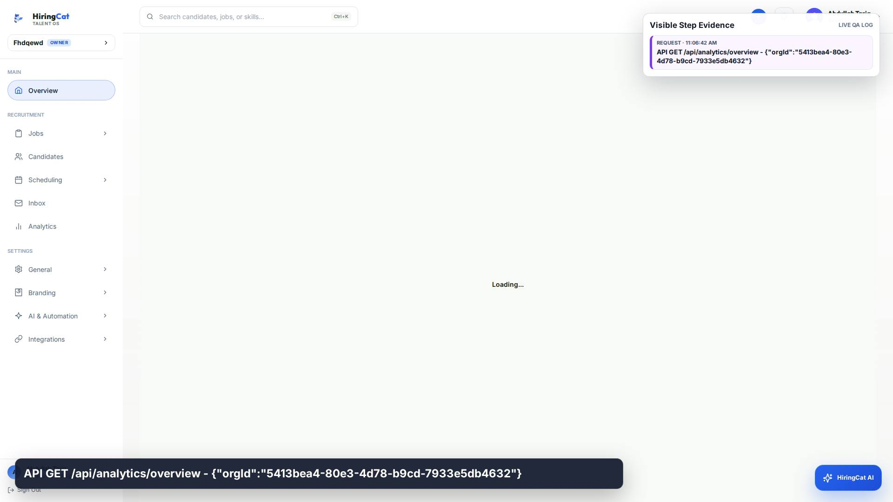
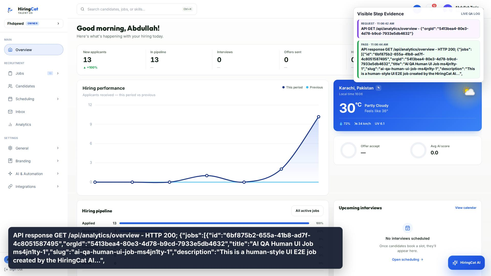
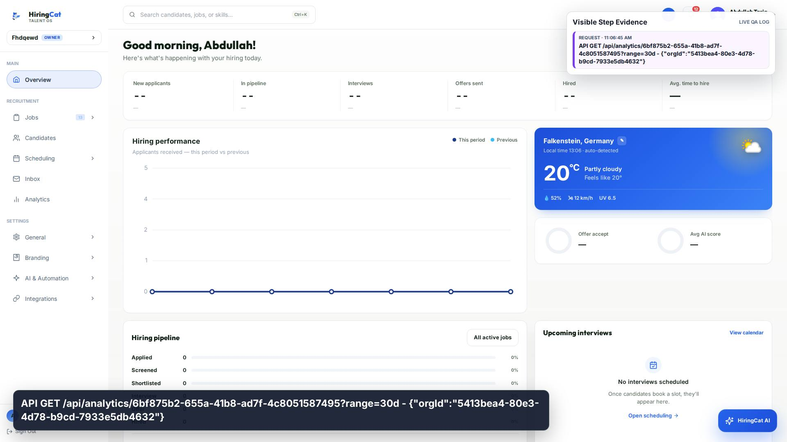
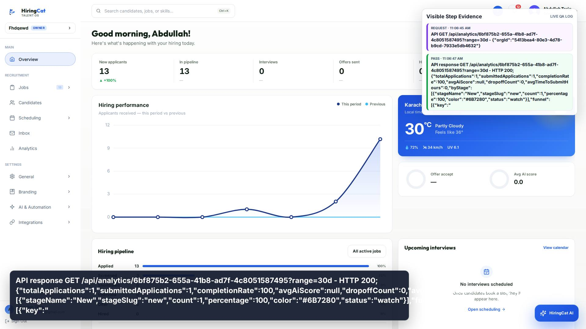
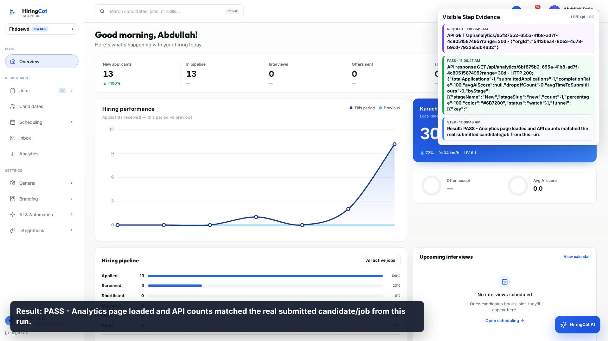

1. STEP
HiringCat AI QA - Analytics

HiringCat AI QA - Analytics

Running: Analytics

Using saved authenticated browser session.

Opening analytics and verifying counts against the real job/candidate created in this run.
UI Step 1: Use analytics filters and refresh/export controls.

Analytics filters used in visible dashboard - range=Last 30 days, job=AI QA Human UI Job ms4jn1ty-1

API GET /api/analytics/overview - {"orgId":"5413bea4-80e3-4d78-b9cd-7933e5db4632"}

API response GET /api/analytics/overview - HTTP 200; {"jobs":[{"id":"6bf875b2-655a-41b8-ad7f-4c8051587495","orgId":"5413bea4-80e3-4d78-b9cd-7933e5db4632","title":"AI QA Human UI Job ms4jn1ty-1","slug":"ai-qa-human-ui-job-ms4jn1ty-1","description":"This is a human-style UI E2E job created by the HiringCat AI...",

API GET /api/analytics/6bf875b2-655a-41b8-ad7f-4c8051587495?range=30d - {"orgId":"5413bea4-80e3-4d78-b9cd-7933e5db4632"}

API response GET /api/analytics/6bf875b2-655a-41b8-ad7f-4c8051587495?range=30d - HTTP 200; {"totalApplications":1,"submittedApplications":1,"completionRate":100,"avgAiScore":null,"dropoffCount":0,"avgTimeToSubmitHours":0,"byStage":[{"stageName":"New","stageSlug":"new","count":1,"percentage":100,"color":"#6B7280","status":"watch"}],"funnel":[{"key":"

Result: PASS - Analytics page loaded and API counts matched the real submitted candidate/job from this run.